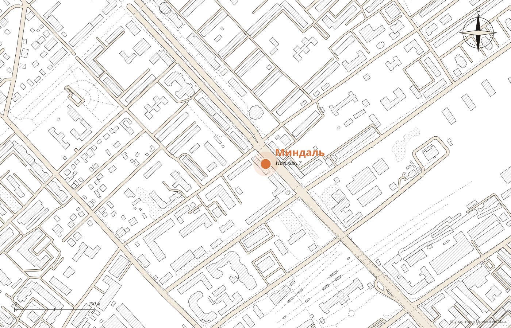

№1
Невская, 7
кофейня с кухней · до 23 мест
каждый день 9:00 до 21:00
Демо-макет студии MERIDIAN · не является официальным сайтом заведения
Coffee & food
Корпусные десерты, о которых говорит город, вафли на завтрак и раф с солёной фисташкой. Две кофейни, книжная полка и настолки, чтобы скоротать ожидание.
№1 Невская: каждый день 9:00 до 21:00
№2 Бульвар: будни с 8:30, выходные с 9:30

Нашумевшие
Хрустящая корзинка, лёгкий крем и ягоды. «Особенно могу выделить корпусные десерты, они потрясающие», пишет гостья, а другая называет голубичный нашумевшим.


Вкусы по отзывам гостей. Сезонные появляются часто: «периодически обновляется сезонное меню».
Лист меню


«Отличные хрустящие вафли!»
Арина, 2ГИС


Авторские
Лидия пишет: «Очень вкусный кофе раф солёная фисташка, мне кажется, вкуснее кофе не пила». А для тех, кто без кофе, голубая матча на банановом.
Волгоград
№1
кофейня с кухней · до 23 мест
каждый день 9:00 до 21:00
№2
первый этаж, вход слева здания
будни 8:30 до 20:30 · выходные 9:30 до 21:30
Статус «открыто» считается по волгоградскому времени. Адреса и часы из карточек 2ГИС.


Пока готовят заказ


Зал
«Самая любимая и атмосферная кофейня во всём городе, здесь голова освобождается от лишних мыслей и заполняется только приятным», пишет гость. Интерьер в оранжевом, с зелёной мебелью.
Что любят гости
Из отзывов гостей в 2ГИС. Наведите на слово или нажмите на него: покажем, как это выглядит.

№1 · адрес и часы
Вторая кофейня на бульваре 30‑летия Победы, 15Б, вход слева здания.
Для владельца
Адреса, часы и статус «открыто» для обеих точек.
Нашумевшие десерты с фото ещё до прихода.
Кнопка ведёт туда, где вы принимаете заказы.
Никаких персональных данных: политика конфиденциальности не нужна.